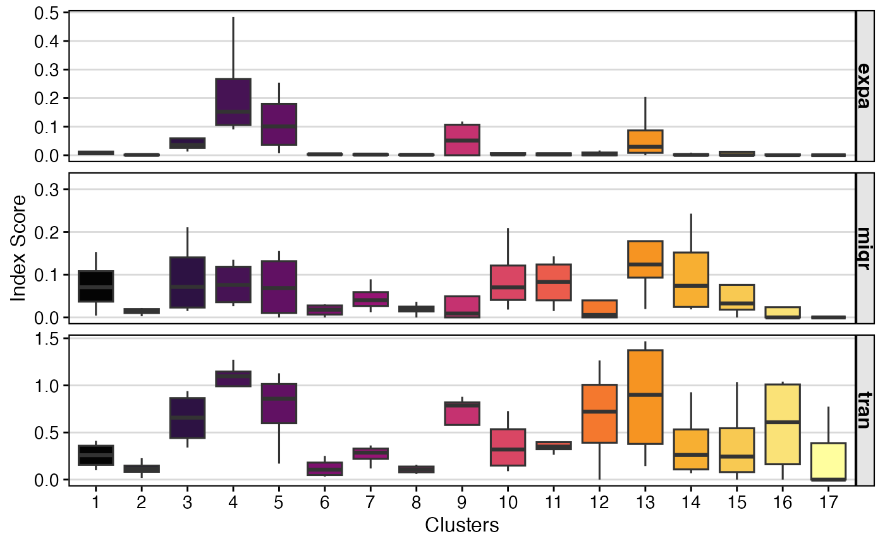
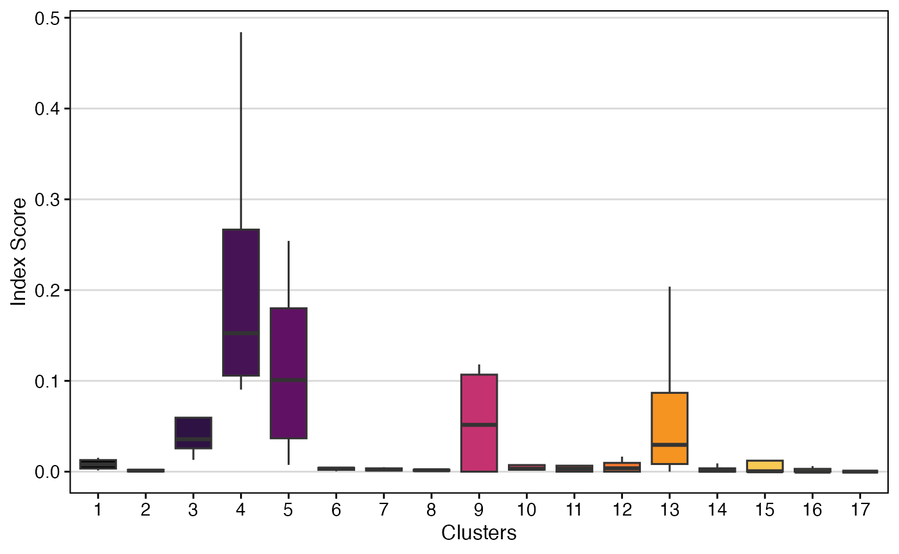

vignettes/articles/Clonal_Bias.Rmd
Clonal_Bias.RmdFrom the excellent work by Lei Zhang, et
al., the authors introduced new methods for looking at clones by
cellular origins and cluster identification. Their STARTRAC software has been
adapted to work with scRepertoire and please read and cite
their excellent work.
To use the StartracDiversity() function, you need to
include the product of the combineExpression() function.
The second requirement is a column header in the metadata of the Seurat
object that has the tissue of origin. In the example data, type
corresponds to the column “Type”, which includes the “P” (peripheral
blood) and “L” (lung) classifiers. The indices can be subsetted for a
specific patient or examined overall using the group.by variable.
Importantly, the function uses only the strict definition of a clone,
which includes the VDJC genes and the CDR3 nucleotide sequence.
StartracDiversity()
expa - Clonal Expansionmigr - Cross-tissue Migrationtran - State TransitionKey Parameters for StartracDiversity()
type: The variable in the metadata that provides tissue
type.group.by: A column header in the metadata to group the
analysis by (e.g., “sample”, “treatment”).Calculate and plot Startrac diversity metrics using “Type” for tissue and “Patient” for grouping:
StartracDiversity(scRep_example,
type = "Type",
group.by = "Patient")
A new metric proposed by Massimo et al,
clonalBias(), like STARTRAC, is a clonal metric that seeks
to quantify how individual clones are skewed towards a specific cellular
compartment or cluster. A clone bias of 1 indicates that a
clone is composed of cells from a single compartment or cluster, while a
clone bias of 0 matches the background subtype
distribution. Please read and cite the linked manuscript if using
clonalBias()
Key Parameter(s) for clonalBias()
group.by: A column header in the metadata that bias
will be based on.split.by: The variable to use for calculating the
baseline frequencies (e.g., “Type” for lung vs peripheral blood
comparison)n.boots: Number of bootstraps to downsample.min.expand: Clone frequency cut-off for the purpose of
comparison (default = 10).Here we calculate and plot clonal bias using aa clone
calls, splitting by “Patient” and grouping by “seurat_clusters”, with a
minimum expansion of 5 and 10 bootstraps:
clonalBias(scRep_example,
cloneCall = "aa",
split.by = "Patient",
group.by = "seurat_clusters",
n.boots = 10,
min.expand =5)